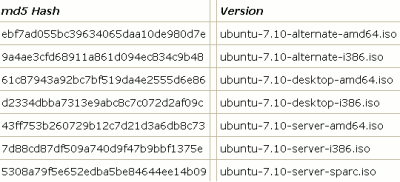

Ubuntu Installation Guide
Hello and welcome to my Ubuntu installation guide. This is where I felt there was a lack in documentation for how to install the alternate CD for Ubuntu 7.10 from start to finish. Hence, I made a guide that people can use. Ubuntu is a free operating system (alternate to Windows or Mac) that is Linux Based. To find out about Ubuntu and why it may be right for you click here.
Preparation
Obtaining the Disk
To obtain an Ubuntu installation CD, the best way is to download it and create it yourself. Plus, it's FREE. You can download it from: ubuntu.com/getubuntu/download. This is the first page you will go on for the download, select the version of Ubuntu you want, I went for desktop edition 7.10, select the type of computer you have - if unsure leave it as what is selected, chose your location under Europe I chose great Britain Virgin Media because this seemed like a good download source. This installation guide is for the alternate CD only which is easier so check the box at the bottom. The display will then look like the picture. Then click on start download.Once this has downloaded it is advisable to check that the download has worked properly. To do this you will need a piece of software called MD5Sum. Click here to download. Once you have installed this simply use it to open the location of your download and wait for it to give you a number. When it does, check this against the number for your version of Ubuntu in the table on this page.

Here is the section of the table relevant but if you are using different options follow the link. Now you will need to burn the file onto disk. To do this you will need software that can specifically handle '.ISO' files. The one I recommend is Infra Recorder. Once you have downloaded and installed this simply insert a blank disk, open up Infra Recorder, on the tool bar at the top click 'Actions' and then 'Burn Image'. Select the file you downloaded and then click OK, it will ask you to name the disk, pick something sensible like 'Ubuntu Disk'. When this has finished you have the disk required to install Ubuntu.Installing Ubuntu
Insert the CD you have just made into the CD drive of the computer you wish to install Ubuntu on, and restart the computer with the disk still inside. In more modern computers this will load automatically to a screen looking like this: (skip to installation continued section).
If again this doesn' work, as happened with me, then you will need to do the following (this requires a floppy disk drive and a blank floppy disk. Find the file 'sbm.bin' under the /install folder on the Ubuntu CD. If you can't find it you can download it from this link, and click on 'sbm.img' to begin the download. Then you will need to download a program called RawWrite, 'Extract' it and install it. First insert the floppy disk and then format it. Open a command prompt (Start / Run / "cmd") if this doesn't work search for an application called 'dos prompt' or similar. It will be a black box with white writing) and type: 'format a:' and then press enter. It may ask you to name the drive but simply pressing enter when this option comes up will leave it with the name it has. When this has stopped doing something then type: 'rawrite 'f sbm.bin', and press enter (this is a rawrite command). When this is finished close the box and the floppy disk will be complete. note: the floppy disk will appear to have nothing on it as it is a hidden system file. Label the floppy disk to avoid confusion.
Now reboot the computer with both the floppy disk and the Ubuntu CD in and watch carefully as it loads up. There will be an option similar to 'Press F2 to enter set-up'. When this appears press the specified key as before, and in the same way that you selected to boot from the CD-ROM drive select to boot from drive 'a:' Then Select the option to reboot your computer and, providing the rest has been done correctly then a screen will load with the title 'Smart Boot Manager'. Use the arrow keys to scroll down to the option that says 'Boot from CD-ROM' or similar. This will then load the Ubuntu start-up page as shown before.
Installation Continued...
To begin with it is a good idea to 'Check CD for Defects'. Scroll down to this option with the arrow keys and select this option. This doesn't take to long and could save a lengthy procedure from if you find out there is a problem later down the line. If that comes back OK then you can continue onto the first option on the main page: 'Install in text mode'. NOTE: users of a very old computer, such as mine, with a memory of less than 256MB of RAM might want to use the 'Memory Test' option first. Just let it run a few times and if there are no errors that should be fine and exit back to the main menu and carry on with the installation process.From here on in I think that the Installation CD does a very good job of being self explanatory. There are just a few areas I would like to draw special attention to, to make sure the installation process goes OK. For the Keyboard Detection allow it to detect, simply press any of the keys you can see and then answer a few yes or no questions honestly, I found it got mine right so it seems pretty good. There will be a lot of loading which can take a long time (so don't start late at night like I did). I wasn't connected to a network so when it started trying to detect a network I selected cancel. If you are on a network and wish to connect up to it then try this site for more info. The 'Disk Partitioning' is probable the only area where you can go wrong. I selected the option 'Guided ' entire disk' and then scrolled down to 'finish partitioning and write changes to disk' on the options they gave me.
This is because I wanted everything on my hard drive to be whipped clean and remove the previous operating system. Again see this site for additional help with other options in this section. After this a long process of loading will follow with the occasional prompt, but not a patch on the time taken to set-up a pre-installed version of Windows Vista. Once this has finished the computer should eject the CD and prompt a reboot. When this happens remove both the CD and the Floppy Disk, then you will want to follow the process previously described and change the boot drive back to your hard drive. Ubuntu will now load and you will reach the login screen. Simply enter your username, and password if you chose one, and press enter. Congratulations, you are now an official member of the Ubuntu community. For a list of some good applications for Ubuntu, completely free, see my applications page, and for any additional or ongoing support see the Ubuntu support site or ask in the Ubuntu forums.